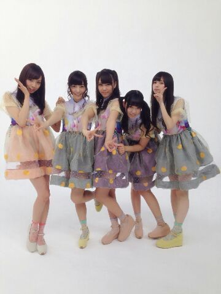
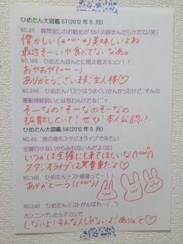

| 2014/03 12 Wed | ひめたん(*>ω<*)そ の418 |
コーヒー飲めないのーって言ったら
こどもだね( ´ ▽ ` )
って言われてしまった
むー

と言うことで
高校３年生になっての抱負は
コーヒー飲めるようになる！にします
どもーひーめたんです
生まれたままで
みんな観てくれてありがとー♪
MVもきっと喜んでるよー

スカートは３色展開。
実はよく観ると
うん？てシーンがたくさんあるんだよねー
とりりーぬさんがいっぱいいたり
ひめたんの頭上をカニが舞っていたり
三輪車のサイズとかね。
前回のコメント読んでたら
ひめたんギター似合わな(笑)って声が多くて
もう何も言えなかったよ(゜ω゜)
あ！褒めてくださった方もいたよー
ギター似合うねーって言ってくださる方も
いらっしゃったけども
ギター経験者のみなさん
コードとかまるで押さえてませんが
どうかあたたかい目で......
そして この前乃木どこで
歌収録に参加してきました！
オンエアはいつになるのかしら
楽しみにしててねー♪♪
この曲踊るのすきー楽しみー((o(。・ω・。)o))
アンダーライブもよろしくねっ

そういえば、今さらだけど
乃木坂46 私達のこともっともっと知ってほしい、
基本問題集 2年目篇
運営さんブログに正解がのってるから
ぜひ答え合せしてみてね！
あとさー
みなさんの正解率も
集計されてるんだけど
Q33 中元日芽香が一番好きなおでんの具は？
A33 A：白滝 (正答率：55.3%)
正答率低っ(゜ω゜)
きゅんきゅん王国のみなさんの正答率は
100%って信じてますよー

 ひめたんはなんでそんなに
ひめたんはなんでそんなに
アホ可愛いんですかー？
ってか、ひょうたんって臭いの？
もー知らなーい(゜ω゜)
ひょうたんのことだって
教えてあげないんだからぷーん。
最近ひめたんのこと好きになりました
ところで「ひめたん」の「ん」は
おにぎりでいうと何味しょうか。
ありがとう♪♪
ひめたんに言われたくないと思うけど
接続詞のチョイスが雑な気がするんだよね(゜ω゜)
私保護フィルムとか貼った時に
少しでも気泡が入っちゃうのが
めっちゃ嫌って人なんだけど...ひめたんはどう？
うーわこれ！めっちゃわかる！
ねーこれすんごいわかる！
ひめたんもすーごく気にしちゃう人なのー
でもね最近の保護フィルムには
(仕組みはあんまわかんないけど)
貼って１日後には気泡がなくなるものがあって
ひめたんはそれ使ってるよー！
もしもひめたんがペットになるなら、
「カタツムリ」、「ナナフシ」、「金魚」の
誰のペットになりたいですか？
無知なひめたんはナナフシさんの生活域が
いまいちピンとこないんだけど
とりあカタツムリさんにしておこうかな。
録画して穴が開くまでそんなバカな見ました
うそばっかりー( ´ ▽ ` )
ひめたんは消えるボールペンとか使ってる？
ライブのリハなんかで
立ち位置メモる時とか使うよー
１回決めてもより良い見え方に変えたり
スタジオと本番のステージでも感覚が違うから
便利でーすよー
あとお手紙書く時とかに＊＊
ひめたんのブログの
コメント欄下２ケタに46を踏んだ方へ
手書きでコメ返するコーナー
＼ ひめたん46 ／

いつもコメントたくさん
ありがとうございます(＊^ω^＊)
MVの感想とか卒業エピソードとか
楽しい質問とか真面目なアドバイスとか
思い出話とか近況報告とか
ひとつの日記からこんなにも
トピック立っちゃうんだーって
読んでてわくわくするの◎
ここ最近
腰が痛くて困ってるのに
加えて今日は膝も痛い
もう泣きそうーーーーー
(＊´・ω・＊)
コメント(595)
2014/03/12 23:48